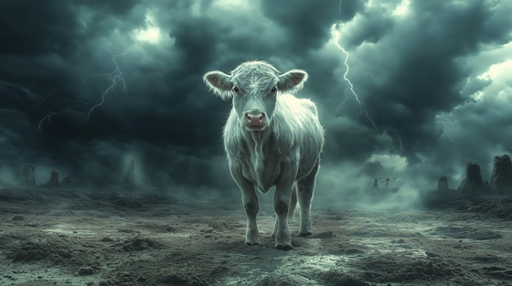

Io was a mortal priestess of Hera, beloved by Zeus. To hide his affair from Hera, Zeus transformed Io into a white cow. But Hera, seeing through the deception, demanded Io as a gift and set the hundred-eyed giant Argus to watch over her.
After Argus’s death, Hera sent a gadfly to sting Io relentlessly, forcing her into endless wandering across the earth. In myth, Io's descendants would ultimately include Hercules—but she herself endured unimaginable suffering.
This song captures Io’s endless grief, exile, and silent rage under the gods’ cruel games.
The Cow and the Sky
I wore the veil, I sang her name
I bore the torch, I fed the flame
Yet gods conspire, and kings betray—
Now hooves, not hands, must find my way
No prayer could save, no altar bind—
The broken form they left behind
The cow and the sky, the whip and the rain
I run from love that births only pain
The earth denies, the stars deny—
And still I bleed beneath the sky
Through river’s mouth, through barren stone
Through ancient lands I crawl alone
Each mile a scar, each breath a chain—
A ghost in hide, a soul in shame
No voice to speak, no hands to fight—
I wear my sorrow into night
The cow and the sky, the whip and the rain
I run from love that births only pain
The earth denies, the stars deny—
And still I bleed beneath the sky
Yet through the dark, a child will rise—
A voice that storms the thousand skies
Through endless grief, a line remains—
A bloodline bound by sacred chains
IO: “He touched me. She cursed me.
I remember what they forgot: my name.”
The cow and the sky, the whip and the rain
I bear the mark of gods insane
No river drowns, no mountain hides—
The soul that howls beneath the sky
I wander still, I wander blind—
And curse the gods that left me behind